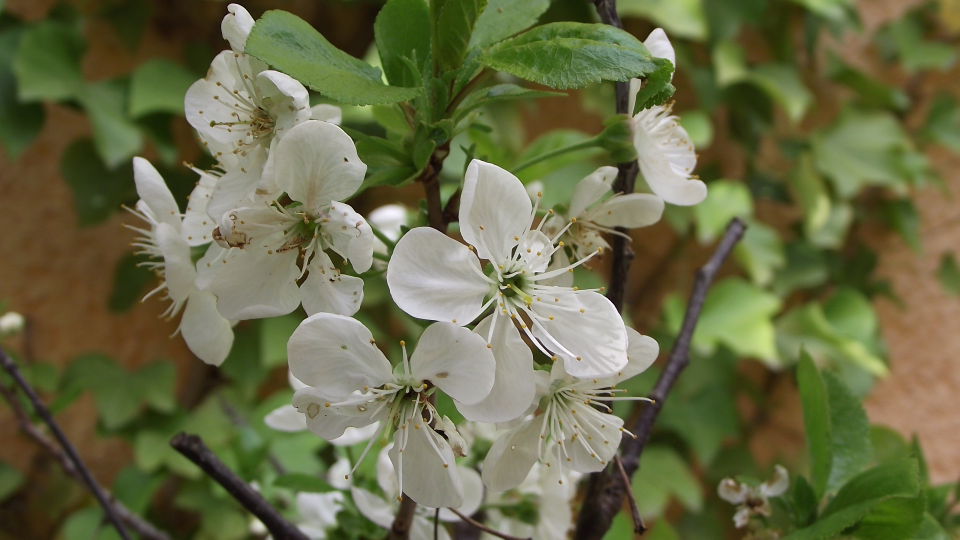
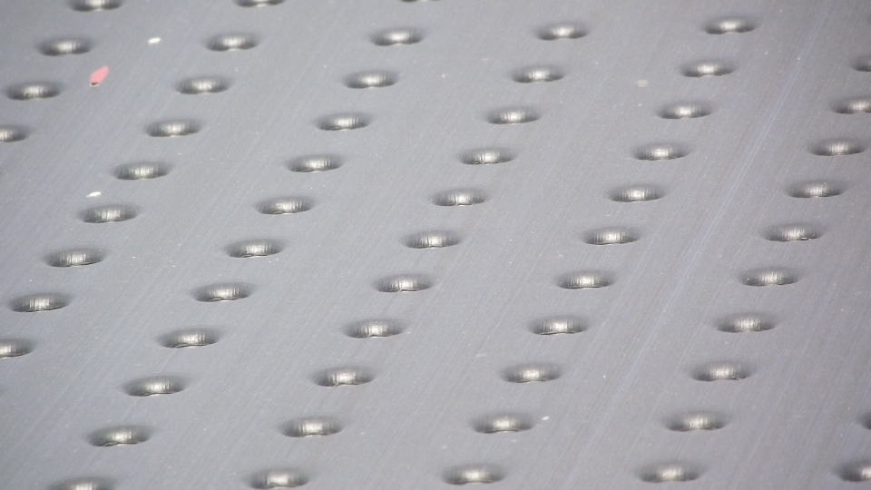
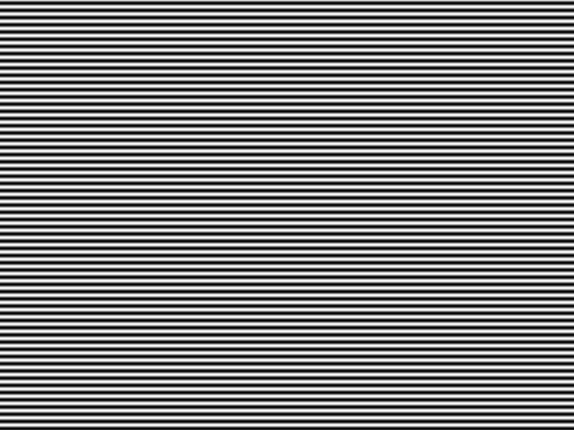

|  |  | |
 |
Bescheibung
Headerangaben:
Grating_h6 | Grating_v2
Dateigroesse: 921.654 bytes
Bits pro Pixel 24
Hoehe: 640
Breite: 480
manmade_06 | nature_06
Dateigroesse: 1.555.254 bytes
Bits pro Pixel 24
Hoehe: 960
Breite: 540
Loesung
Loesung

Bescheibung
Loesung
try (FileOutputStream fosh = new FileOutputStream("horizontal.txt");
OutputStreamWriter oswh = new OutputStreamWriter(fosh, "US-ascii");
BufferedWriter bwh = new BufferedWriter(oswh)) {
// BGR schreiben horizontal 2.1.
for (int x = 0; x < bmp.image.getWidth(); x++) {
int rAmount = bmp.image.getRgbPixel(x, 0).r;
int gAmount = bmp.image.getRgbPixel(x, 0).g;
int bAmount = bmp.image.getRgbPixel(x, 0).b;
bwh.write(rAmount + " " + gAmount + " " + bAmount);
bwh.newLine();
}
} catch (IOException e) {
e.printStackTrace();
}
try (FileOutputStream fosv = new FileOutputStream("vertikal.txt");
OutputStreamWriter oswv = new OutputStreamWriter(fosv, "US-ascii");
BufferedWriter bwv = new BufferedWriter(oswv)) {
// BGR schreiben vertikal 2.1.
for (int y = 0; y < bmp.image.getHeight(); y++) {
int rAmount = bmp.image.getRgbPixel(0, y).r;
int gAmount = bmp.image.getRgbPixel(0, y).g;
int bAmount = bmp.image.getRgbPixel(0, y).b;
bwv.write(rAmount + " " + gAmount + " " + bAmount);
bwv.newLine();
}
} catch (IOException e) {
e.printStackTrace();
}
Loesung
Loesung
Loesung